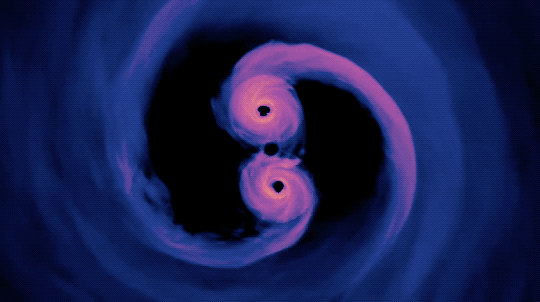
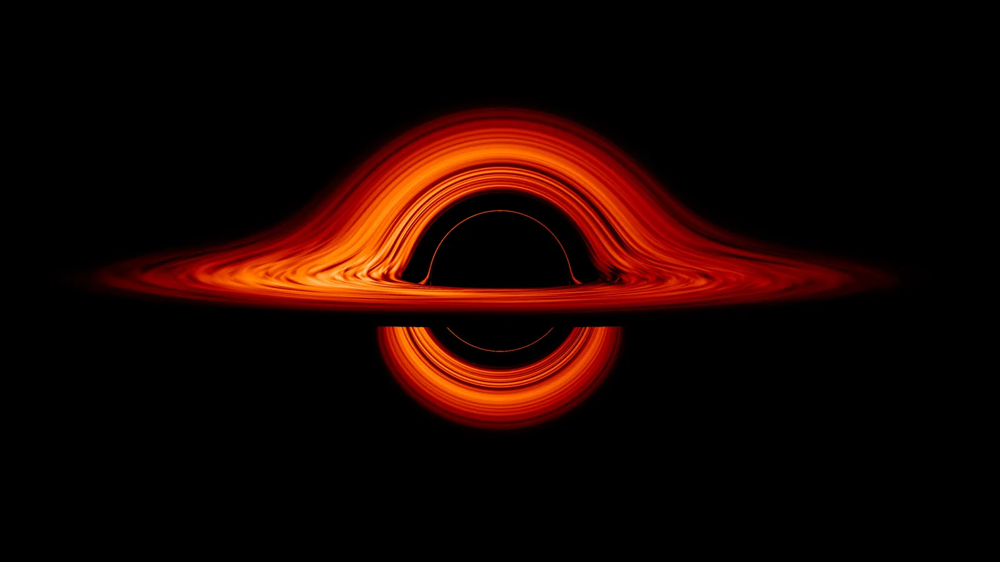

Crne rupe
„To nije mrtvo što može večno ležati,
A sa čudnim eonima čak i smrt može umreti.”
― H.P Lavkraft - „Bezimeni grad"
U astronomiji, crna rupa je naziv za objekat čije je gravitaciono polje toliko jako da nijedan oblik materije ili radijacije ne može da se otisne od nje, uključujući i kvante svetlosti za koje se smatra da imaju najveću brzinu u prirodi, zbog čega objekat pri posmatranju deluje crno (odatle i naziv). Opšta teorija relativnosti crnu rupu opisuje kao mesto u kome je prostor-vreme beskonačno zakrivljeno.
Pojam crne rupe
Snimak aktivnog galaktičkog jezgra koje verovatno sadrži supermasivnu crnu rupu
Simulacija crne rupe Mlečnog puta
Termin crne rupe je sasvim novog datuma. Godine 1969, skovao ga je američki naučnik Džon Viler kao grafički opis jedne zamisli koja je stara najmanje dve stotine godina. Ova zamisao potiče iz vremena kada su postojale dve teorije svetlosti. Jedna od njih smatra da svetlost ima korpuskularnu prirodu i da na nju deluje gravitacija. (Međutim, mi danas znamo da su obe teorije tačne i da svetlost ima dualnu prirodu tj. da je i talas i čestica). Crne rupe su objekti sa gravitacionim poljem toliko jakim da nijedan oblik materije ili radijacije ne može da se otisne od nje. Čak ni kvanti svetlosti za koje se smatra da imaju najveću brzinu u prirodi, ne mogu da pobegnu njenoj jakoj gravitacionoj sili, zbog čega nam deluje crno (po čemu je dobila i ime - crna rupa).
Opšta teorija relativnosti je opisuje kao mesto u kome je prostor-vreme beskonačno zakrivljeno.
Istorija pojma
Pošavši od pretpostavke da na svetlost utiče gravitacija, profesor sa Kembridža Džon Mičel objavio je 1783. godine rad u kome je istakao da bi zvezda dovoljno masivna i zbijena imala tako snažno gravitaciono polje da mu ni svetlost ne bi mogla pobeći. Smatrao je da postoje mnogo ovakvih zvezda. Iako mi ne bismo bili u stanju da ih vidimo, mogli bismo da osetimo njihovu gravitaciju.
Na sličnu zamisao je nekoliko godina kasnije došao francuski naučnik Laplas. On je u svojim radovima istakao da malo znamo o prirodi svetlosti da bi mogli da pretpostavimo kako na nju deluje gravitacija i da nije sasvim na mestu izjednačiti svetlost sa topovskom đuladi u Njutnovoj teoriji gravitacije, jer je brzina svetlosti konstantna.
Teorija koja objašnjava na koji način gravitacija utiče na svetlost pojavila se 1915. godine kada je Ajnštajn objavio svoju opštu relativnost. Međutim, proći će mnogo vremena dok se koncept crne rupe potpuno ne usvoji.
Karl Švarcšild je, nekoliko meseci kasnije, rešio Ajnštajnovu jednačinu polja gravitacije, što je dovelo do boljeg razumevanja crnih rupa i do snažnog uticaja Ajnštajnovih jednačina na kosmologiju. Zanimljivo je to da je te jednačine rešio dok je bio na frontu, a rešenja poštom poslao Ajnštajnu. Međutim, ubrzo je umro od bolesti koju je zaradio u ratu. Tada je već bilo poznato da su crne rupe u stvari, poslednji stadijum evolucije zvezde koja ima dovoljno veliku masu.
Godine 1928, mladi diplomac Padma Subramanijan Čandrasekar iz Indije izračunao je koliko bi zvezdino jezgro moralo biti masivno da bi se suprotstavila sopstvenoj gravitaciji kad istroši svoje gorivo tj. da ne postane crna rupa. Čandrasekar je izračunao da ta granica iznosi 1,4 Sunčeve mase i ona je danas poznata kao Čandrasekarova granica. Artur Edington se suprotstavio Čandrasekaru smatrajući da će se jezgro „nekako“ sigurno odupreti kolapsu, i donekle je bio u pravu jer se ispostavilo da zvezde sa jezgrom mase između 1,5 i 2 Sunčeve se mogu odupreti gravitacionom kolapsu zbog načela isključenja između protona i neutrona u jezgru i takve zvezde se nazivaju neutronske zvezde. Ali zvezde sa jezgrom mase iznad 2 Sunčeve ne mogu izbeći kolaps i one postaju crne rupe.
Nastanak crnih rupa

Da bismo razumeli kako može nastati jedna crna rupa, potrebno je da se upoznamo sa životnim ciklusom jedne zvezde. Zvezda biva obrazovana kada velika količina gasa (uglavnom vodonika) počinje da kolabira pod dejstvom sopstvenog gravitacionog privlačenja. Kako se gas sažima, njegovi atomi se sve češće i sve većom brzinom međusobno sudaraju što dovodi do zagrevanja gasa. Konačno, gas postaje toliko topao da se vodonikovi atomi prilikom sudaranja više ne odbijaju jedan od drugoga, već srastaju obrazujući helijum. Toplota oslobođena pri ovoj reakciji, koja nalikuje na kontrolisanu eksploziju vodonične bombe, dovodi do sijanja zvezde. Ova dodatna toplota takođe povećava pritisak gasa, sve dok on ne postane dovoljno visok da se javi kao protivteža gravitacionom privlačenju, što zaustavlja njegovo dalje sažimanje. Situacija pomalo podseća na onu sa balonom – postoji ravnoteža između pritiska unutrašnjeg vazduha, koji pokušava da dalje raširi balon, i napetosti gume, koja nastoji da smanji balon. Zvezda zadržava postojano stanje veoma dugo, sa toplotom iz nuklearnih reakcija u ravnoteži sa gravitacionim privlačenjem. Konačno, međutim, zvezda će istrošiti zalihe vodonika i ostalog nuklearnog goriva. Paradoksalno, što jedna zvezda na početku svog veka ima više goriva (tj. što je masivnija), to će ga ona brže istrošiti, jer će joj biti potreban veći unutrašnji pritisak da bi se oduprla svojoj gravitaciji, a za veći pritisak je potrebna veća temperatura koja se postiže većim utroškom goriva. Naše Sunce po svoj prilici ima dovoljno goriva za narednih 5 milijardi godina, ali masivnije zvezde mogu da potroše svoje gorivo za samo sto miliona godina.
Nakon što zvezda potroši svoje vodonično gorivo, hladi se i unutrašnji pritisak opada tako da ona počinje da se sabija pod uticajem gravitacionog privlačenja. Paradoksalno, dok se jezgro sabija, omotač jezgra se širi. Jezgro se zbog sabijanja toliko zagreva da započinje drugu nuklearnu reakciju u kojoj helijum prelazi u ugljenik. Dotle se omotač proširio od više desetina do stotinu puta, a boja zvezde postaje crvena. Te zvezde se nazivaju crveni džinovi, njihova temperatura je prepolovljena na oko 2.300 K (dok je temperatura našeg „žutog” Sunca oko 5.760 K). Crveni džin će se održavati sve dok ne potroši sve zalihe helijuma, nakon toga gravitacija opet pobeđuje i zvezda se opet sabija i zvezdana materija postaje veoma gusta.
Ako je njena masa ispod Čandrasekarove granice (1,5 masa Sunca) ona će završiti kao „beli patuljak“, zvezda prečnika oko 1.500 km, koja sija belom svetlošću. Gravitaciji se u ovom slučaju suprotstavilo Paulijevo načelo isključenja koje glasi da čestice sa istom energijom moraju imati različite spinove. S obzirom da postoje dva spina, a materija je veoma zgusnuta, ovo ih nagoni da se međusobno udaljavaju. Ako je masa zvezde između 1,5 i 2 Sunčeve mase, kod ovakvih zvezda kao protivteža gravitaciji takođe bi se javilo odbijanje proisteklo iz načela isključenja, ali ne više između elektrona, već između protona i neutrona. Ove zvezde su zbog toga dobile naziv neutronske zvezde. One u prečniku imaju tek desetak milja, dok bi im gustina iznosila stotine miliona tona po kubnom centimetru.
Zvezde sa masom većom od 2 Sunčeve suočavaju se sa velikim problemom kada utroše svoje gorivo. U nekim slučajevima one mogu da eksplodiraju u vidu supernove, te na taj način, odbacujući materiju, da izbegnu katastrofalni gravitacioni kolaps, no teško je poverovati da se ovo uvek desi bez obzira na veličinu zvezde. Poslednji stadijum jedne masivne zvezde je crna rupa. Načelo isključenja u tom slučaju nije dovoljno jako da se odupre gravitaciji, pa zvezda kolabira u jednu tačku (singularitet) koja zadržava masu te zvezde, ali sa zapreminom jednakoj nuli.
Dokazi
Tehnike posmatranja
Postoje mnogo tehnika kojima se može otkriti potencijalna crna rupa. Kao što je pokazao Džon Mičel u svom pionirskom radu iz 1783, crna rupa i dalje vrši gravitacioni uticaj na obližnje objekte. Astronomi su registrovali mnogo sistema kod kojih dve zvezde kruže jedna oko druge, međusobno privlačene gravitacijom. Takođe su uočili sisteme kod kojih postoji samo jedna vidljiva zvezda koja kruži oko nevidljivog pratioca. Ne može se, razume se, odmah zaključiti da je ovaj pratilac crna rupa: možda je po sredi naprosto zvezda koja je odveć slaba da bi se videla. Međutim, neki od ovih sistema, kao što je Labud X-1, takođe su veoma snažni izvori rendgenskih zračenja. Najverovatnije objašnjenje ovog fenomena jeste da materija nekako biva skidana sa površine zvezde i da krećući se spiralno pada na nevidljivog pratioca gde se zagreva i emituje rendgensko zračenje. To se naziva akreacijski disk crne rupe. Na osnovu uočene orbite vidljive zvezde dolazi se do vrednosti mase nevidljivog pratioca koja je otprilike 6 Sunčevih, što može ukazati samo na crnu rupu. Gravitaciono sočivo je jedan od efekata koji se javlja kada objekat snažne gravitacije savije svetlost koja potiče od nekog udaljenog izvora, prema jednoj žižnoj tački, čineći udaljeni objekat bližim. Ovaj efekat često izazivaju crne rupe svojom snažnom gravitacijom. Mlazevi crne rupe javljaju se kad i akreacijski disk, kad se crna rupa „hrani“. Ovi mlazevi se javljaju kao posledica magnetnog polja materije koja se kreće spiralno oko crne rupe i obrazuje akreacijski disk. Magnetsko polje izbacuje materiju u vidu plazme u pravcu ose rotacije akreacijskog diska. To je još jedan način da se detektuje crna rupa.
Najbliže crne rupe
Pored Sagitariusa A, supermasivne crne rupe koja se nalazi u centru naše galaksije ovo su moguće crne rupe u relativnoj blizini Zemlje.
A0620-00
GRO J1655-40
HTE J1118+480
Cug X-1
GRO J0422+32
GS 2000+25
V404 Cug
GH 339-4
GRS 1124-683
HTE J1550-564
HTE J1819-254
4U 1543-475
Karakteristike i teorije crne rupe
Veličina crnih rupa
Crne rupe mogu imati skoro bilo koju masu. Skoro svaki objekat kad je dovoljno sabijen može postati crna rupa, jer bi njegova gravitacija rasla sa smanjenjem zapremine. Međutim, crne rupe prirodno mogu da nastanu samo sa određenim masama.
Crne rupe se mogu podeliti u više kategorija u zavisnosti od njihove veličine:
Supermasivne crne rupe – imaju masu jednaku milijardi solarnih (masa Sunca). Smatra se da se one nalaze u centrima galaksija jer se jedino tako može objasniti šta može okupiti veliki broj zvezda u jednu galaksiju. Čak se i u centru naše galaksije nalazi supermasivna crna rupa, Sagitarius A. Jedan od načina na koji mogu da nastanu ove crne rupe je gravitacioni kolaps supermasivnog crvenog džina, ali mogu da nastanu i tako što manja crna rupa jednostavno „poraste“ apsorpcijom velike količine materije.
Crne rupe srednje mase – sadrže oko hiljadu solarnih masa.
Stelarne crne rupe – crne rupe koje nastaju kolabiranjem individualnih zvezda sa masama od 3 do 30 solarnih. Medutim, teoretski „dodavanjem“ mase neutronskoj zvezdi može da prouzrokuje to da ona prede Čandrsekarevu granicu i da kolabira.
Mikro crne rupe – imaju masu manju od sunčeve sve do mase ravne Plankovoj konstanti. Takve crne rupe ne bi mogle da nastanu pod dejstvom gravitacionog kolapsa jer imaju masu manju od Čandrsekarove granice, već mogu da nastanu samo ako je materija sabijena do ogromnih gustina veoma velikim spoljnim pritiskom. Fizičar Džon Viler je izračunao, da ako bi se iz svih okeana na Zemlji, uzela teška voda mogla bi se napraviti vodonična bomba koja bi u toj meri sabila materiju u središtu da bi tu nastala crna rupa. Praktična mogućnost jeste da su takve crne rupe sa malom masom nastale pri visokim temperaturama i pritiscima veoma rane vaseljene. Ove praiskonske crne rupe su mogle tada nastati samo ako rana vaseljena nije bila savršeno ravnomerna i jednoobrazna, zato što se jedino neko malo područje sa gustinom većom od prosečne moglo sabiti na ovaj način da se tu obrazuje crna rupa. Međutim, do danas nije otkrivena ni jedna ovakva crna rupa. Drugi način kako mogu nastati mikro crne rupe jeste putem visoko energetskih akceleratora čestica, ali ukoliko je ovo tačno to se onda dešava veoma često jer su sudari koje izazove čovek energetski mnogo slabiji od sudara koji se svakodnevno dešavaju u Zemljinoj atmosferi kao posledica kosmičkog zračenja. Crne rupe veoma male mase brzo nestaju zbog Hokingove radijacije. Teoretski, treći način kako bi ovakve crne rupe mogle da nastanu jeste ako veće crne rupe ne dođu u dodir sa materijom, pa im se masa za to vreme smanji zbog Hokingove radijacije.
Tipovi crnih rupa
Astrofizičari klasifikuju crne rupe po njihovom naelektrisanju i ugaonom momentu, dakle, sledeće kombinacije su moguće:
| Nerotirajuća |
Rotirajuća |
| Nenaelektrisana |
Švarcšildova crna rupa |
Kerova crna rupa |
| Naelektrisana |
Rejsner-Nordstrumova crna rupa |
Ker-Njumanova crna rupa |
Švarcšildova crna rupa – U Ajnštajnovoj teoriji relativiteta Švarcšildovo rešenje (ili Švarcšildov vakuum) opisuje gravitaciono polje sferične nerotirajuće mase, kao recimo (nerotirajuća) zvezda, planeta ili crna rupa. Takođe je dobra aproksimaciona računica za sporo-rotirajuća tela kao što su Zemlja ili Sunce. Prema Birkohovoj teoremi ŠR je najopštije, stacionarno, sferno simetrično rešenje Ajnštajnovih jednačina polja. Švarcšildova crna rupa ili statična crna rupa je crna rupa koja nije naelektrisana i ne rotira se. Jedini kriterijum po kome se dve crne rupe ovog tipa mogu razlikovati je masa.
Rejsner-Nordstrumova crna rupa – Prvu crnu rupu koja je naelektrisana ali se ne rotira otkrili su Hans Rejsner i Ganar Nordstrum.
Kerova crna rupa – Kerovo rešenje (ili Kerov vakuum) je rešenje Ajnštajnovih jednačina polja koje opisuje prostorvreme oko masivnog rotirajućeg objekta, kao na primer - crne rupe.
Ker-Njumanova crna rupa – crna rupa koja ima ugaoni momenat i naelektrisanje.
Delovi crne rupe
Nerotirajuća crna rupa
Horizont događaja je efektivna granica crne rupe, unutar koje se svetlost ne može otisnuti ka spoljnoj sredini. Horizont nije fizička površina već predstavlja imaginarnu sferu oko crne rupe unutar koje posmatrač ne može ništa videti. Nakon kolapsa zvezde obrazuje se horizont događaja u vidu sfere na mestu gde čestice svetlosti, koje se kreću od crne rupe, uspore i stanu obrazujući stojeći talasni front. Radijus ove sfere se naziva Švarcšildov radijus. Horizont događaja je propustljiv u jednom smeru: informacije mogu ući, ali ne mogu i izaći iz prostora obuhvaćenog horizontom događaja.
Singularitet u jednoj tački je karakterističan za nerotirajuće crne rupe. Fizičari singularitet definišu kao deo prostora sa beskonačnom gustinom i nultom vrednošću zapremine. Međutim, postoji izvesna nesigurnost u ovom opisu: za razliku od opšte relativnosti, kvantna mehanika, koja je u potpunosti podržana u matematičkom i eksperimentalnom pogledu, ne dozvoljava objektima da imaju nultu vrednost zapremine, tako da singularitet opisuje kao veliku količinu mase sabijenu u najmanju moguću zapreminu.
Fotonska sfera je sfera koja se nalazi oko horizonta događaja i sastavljena je od fotona. Naime fotoni koji tangiraju na ovu sferu bivaju zarobljeni jakom gravitacijom crne rupe pa nastavljaju da kruže oko crne rupe, čineći sami, fotonsku sferu. Radijus fotonske sfere kod nerotirajuće crne rupe je 1.5 puta veći od radijusa horizonta događaja. Nijedan foton nema šansu da ostane dugo u orbiti i to iz dva razloga. Prvi, jer bi verovatno interagovao sa materijom koju privlači crna rupa, a drugo, jer mu je putanja veoma nestabilna tako da svako minimalno odstupanje bi kasnije prouzrokovalo sve veće i veće, dok foton ne padne u crnu rupu ili joj ne pobegne.
Akreacijski disk nastaje od materije koja će biti uvučena u crnu rupu. Materija zbog jake gravitacije kruži oko crne rupe formirajući disk. Materija je u disku veoma sabijena pa je trenje zagreva do velike temperature, zbog čega emituje fotone sa velikom energijom. Ovaj proces neverovatno efikasnog pretvaranja materije u energiju je efikasniji od nuklearne fuzije tj. od procesa sijanja zvezde.
Mlazevi plazme su još jedna karakteristika crnih rupa u procesu konzumiranja materije. Nastaju kao posledica magnetnog polja koje stvara materija u akreacijskom disku. Mlazevi nastaju u pravcu ose rotiranja materije u akreacijskom disku i mogu biti dužine gotovo, kao čitave galaksije.
Rotirajuća crna rupa
Dva horizonta događaja karakterišu rotirajuću crnu rupu, unutrašnji i spoljašnji. Kada se rotacija ubrza unutrašnji horizont se širi, a spoljni se sabija, ukoliko je rotacija veoma brza oba horizonta se stapaju i smanjuju ka singularnosti. Kada potpuno nestanu ostaje samo gola singularnost.
Dve fotonske sfere se nalaze oko oba horitonta događaja. Fotoni koji bi nailazili u pravcu suprotnom od spina crne rupe, obilazili bi u spoljnoj fotonskoj sferi oko spoljašnjeg horizonta događaja, a fotoni koji bi naišli u pravcu spina crne rupe obilazili bi kružnim putanjama u unutrašnjoj fotonskoj sferi.
Ergosfera je oblast izvan spoljnjeg horizonta događaja. Naziv potiče od grčke reči „ergon“ što znači „raditi“. Ima elipsoidni oblik i dodiruje horizont događaja na polovima. Spoljnja granica je ergopovrš, koja nije fizička, već imaginarna, a unutrašnja granica ergosfere je spoljašnji HD. U samoj ergosferi prostor-vreme rotira oko crne rupe brže od svetlosti dok na ergopovrši rotira brzinom svetlosti. Sve čestice koje upadnu u ergosferu ubrzavaju (a samim tim dobijaju energiju) i rotiraju oko crne rupe, ali s obzirom da nisu obuhvaćene horizontom događaja ne moraju da dožive singularnost, već mogu biti emitovane u okolni prostor. Ovaj proces se naziva Penrouzov proces, jer je matematičar Rodžer Penrouz prvi na to ukazao 1969. godine. Naime, smatra se da ukoliko bi određena količina materije ušla u ergosferu, na osnovu zakona verovatnoće jedan njen deo bi završio u singularnosti dok bi drugi,, pobegao” iz ergosfere sa energijom većom od energije početne materije. Samim time crna rupa bi izgubila energiju.
Singularitet u obliku prstena – opšta relativnost predviđa da rotirajuće crne rupe imaju singularitet u obliku prstena koji leži u ekvatorijalnoj ravni crne rupe, i ima nultu vrednost debljine. Važno je napomenuti da kvantna mehanika ne dozvoljava objektima da imaju nultu vrednost bilo koje dimenzije, ali dok se ne razvije nova sveobuhvatna teorija ovo je najpribližnija ideja o singularnosti.
„Bez dlaka“ teorija

„Bez dlaka“ teorija kaže da rešenja crnih rupa u Ajnštajn-Maksvelovim jednačinama zavise od samo tri, praktično veoma lako uočljiva parametra: mase, električnog naboja i ugaonog momenta. Teorija je dobila ime po izjavi poznatog fizičara Džona Vilera da crne rupe nemaju dlaku, misleći pri tome, da su karakteristike crne rupe eksperimentalno lako uočljive.
Entropija i Hokingova radijacija
Stiven Hoking je još 1971. pokazao da horizont događaja klasične crne rupe ne može nikada da se smanji. To je veoma podsećalo na drugi zakon termodinamike, tačnije na fizičku veličinu poznatu kao entropija kojom se meri stepen nereda nekog sistema. Činjenica da će se nered povećati ako se stvari prepuste same sebi predstavlja stvar svakodnevnog iskustva. Nered se može pretvoriti u red ali je za to potrebno da se uloži energija. Primer toga je ponašanje molekula gasa u kutiji. Da pretpostavimo da kutija ima dve pregrade i da se molekuli gasa nalaze u jednoj gde su sabijeni i u sređenom stanju. Kada se ukloni pregrada molekuli će ispuniti celu kutiju, sudarajući se i odbijajući međusobno i od zidova kutije. Entropija kutije se povećala, a da bi se smanjila potrebno je uložiti energiju kako bi se svi molekuli vratili natrag na svoje mesto.
Crna rupa, naizgled narušava drugi zakon termodinamike, jer ako bi progutala materiju sa puno entropije, ukupna entropija izvan crne rupe bi se smanjila. Može se, naravno reći da se ukupna entropija računajući materiju u crnoj rupi, nije smanjila ali kako nema načina da se zaviri u crnu rupu, ne možemo ni da ustanovimo kojom se entropijom odlikuje materija u njoj. Jedno rešenje ovog problema predložio je Džejkob Bekenstajn, izloživši zamisao po kojoj područje horizonta događaja predstavlja meru entropije crne rupe, s obzirom da kada materija dospe u crnu rupu ona joj poveća masu a samim tim i njeno gravitaciono privlačenje i horizont događaja.
Zamisao je bila dobra, ali je otvorila i nova pitanja. Ako crna rupa ima entropiju mora imati temperaturu, a ako ima temperaturu mora emitovati zračenje. Ali kako crna rupa može da odašilje čestice ako po njenoj samoj definiciji ništa ne može da pobegne iz područja horizonta događaja? Odgovor leži u kvantnoj teoriji. Čestice koje emituje crna rupa ne potiču iz horizonta događaja već iz njegove neposredne blizine. Opšte je poznato da vakuum nije prazan prostor već da sadrži male količine energije. Kvant energije se može predstaviti kao jedan par čestice i antičestice. Budući da se energija ne može stvoriti ni iz čega jedan član para imaće pozitivnu, a drugi negativnu energiju. Onome sa negativnom energijom je suđeno da bude kratkovečna virtuelna čestica, zato što stvarne čestice imaju pozitivnu ukupnu energiju pod normalnim okolnostima. Ali gravitaciono polje crne rupe je toliko jako da tu čak i stvarna čestica ima negativnu energiju, stoga može i virtuelna antičestica da upadne u crnu rupu samim tim oslobađajući svog partnera sa kojim se nije potrla. Ta čestica može opet upasti u crnu rupu, ali može joj i pobeći u vidu stvarne čestice ili antičestice. Udaljenom posmatraču bi ovo delovalo kao da je česticu emitovala crna rupa. Kao protivteža pozitivnoj energiji emitovanog zračenja javio bi se priliv čestica sa negativnom energijom u crnu rupu. Prema Ajnštajnovoj jednačini E=mc2 energija je upravno srazmerna masi, tako da priliv negativne energije u crnu rupu dovodi do smanjenja njene mase. Kako crna rupa gubi masu, područje njenog horizonta događaja se smanjuje, samim tim i njena entropija, ali ovo smanjenje entropije crne rupe dobija više nego punu nadoknadu u entropiji emitovanog zračenja, tako da nikada ne dolazi do narušavanja drugog zakona termodinamike.
Informacioni paradoks crne rupe
Paradoks se javio zbog toga što informacije u crnoj rupi „nestaju“, a to se protivi naučnoj činjenici – da se informacije ne mogu uništiti. Kvantno stanje materije koja uđe u crnu rupu se razlikuje od kvantnog stanja energije koja biva emitovana kao posledica Hokingove radijacije.
Matematička teorija
Crne rupe su matematički opisane preko Opšte teorije relativnosti. One se mogu dobiti iz rešenja Ajnšajnovih jednačina polja. Jedno od rešenja jeste Švarcšildovo rešenje koje koje opisuje prostor-vreme izvan nerotirajuće crne rupe, preko sledeće jednačine sa sfernim koordinatama:
𝑐
2
𝑑
𝜏
2
=
−
(
1
−
𝑅
s
𝑟
)
𝑐
2
𝑑
𝑡
2
+
(
1
−
𝑅
s
𝑟
)
−
1
𝑑
𝑟
2
+
𝑟
2
(
𝑑
𝜃
2
+
sin
jednak Švarcšildovom poluprečniku, tada prostor-vreme poseduje nešto što se naziva horizontom događaja. Dakle, na toj distanci od centra crne rupe, je njen horizont događaja, kao omotač. Ako radijalna koordinata ima vrednost 0, tada se radi o singularitetu. Iz ovoga se vidi da u oblastima unutar tela oblika sfere sa Švarcšildovim prečnikom, nijedno telo sa njene površine, e koja predstavlja horizont događaja, bez obzira da li se kreće i brzinom svetlosti, ne može da se odupre gravitaciji te sfere. Zbog toga ovo rešenje opisuje crne rupe.
Eksplozija crne rupe
Isparavanjem (Hokingovom radijacijom) crna rupa se smanjuje. Time ona postaje sve toplija i na izmaku svoje mase i energije, temperatura se brzo povećava tako da crna rupa svoj kraj beleži praskom tj. eksplozijom. Hoking ovo povećanje temperature objašnjava time što smanjenje mase prouzrokuje to da čestice sa negativnom energijom treba da pređu kraći put da bi postale stvarne, te je tako veći obim emitovanja, a time i prividna temperatura crne rupe.
Hoking je izračunao da bi praiskonske crne rupe mase oko 1011 kg, koje su mogle biti stvorene Velikim praskom, trebalo do sada da potroše svoju energiju i time eksplodiraju negde u našoj sadašnjosti. Međutim, tako nešto još nije detektovano.
Jačina eksplozije zavisi od toga koliko različitih vrsta elementarnih čestica tamo ima. Naravno, kada bi se rešio problem o kvarkovima gotovo bi se rešio i problem posmatranja eksplozije crne rupe. Još uvek niko nije otkrio samu eksploziju crne rupe. Za velike crne rupe se pretpostavlja da ostavljaju pustoš po svemiru. Međutim, njihov životni tok je jako dugačak tako da je malo verovatno da će neka od njih uskoro eksplodirati, ako se uzme u obzir da su najranije nastale u vreme Velikog praska. Zato treba istraživati male tj. praiskonske crne rupe, jer one svoju energiju brzo troše. Da bi uopšte došli u priliku da vidimo eksploziju crne rupe potrebno je pronaći način za registraciju ovih eksplozija na razdaljini od oko jedne svetlosne godine. Osim toga, detektori gama zračenja bi morali biti veliki, a njihovo pravljenje je skupo. U ovom slučaju ne bi bilo neophodno utvrditi da svi kvanti, koji su emitovani tokom eksplozije, dolaze iz istog pravca, već bi bilo dovoljno uočiti da svi stižu u veoma kratkom razmaku, jer je to prilična pouzdanost da potiču iz iste eksplozije.
U jeftinijem slučaju, Zemljina atmosfera je dobar detektor gama zračenja praiskonskih rupa. Kada se jedan visokoenergetski kvant gama zračenja sudari sa atomima naše atmosfere, on stvara parove elektrona i pozitrona. Tako se izaziva elektronski pljusak. Eksplozivne emisije gama zračenja bi se mogle otkriti po bljeskovima svetlosti na noćnom nebu.
Pulsari - rotirajuće neutronske zvezde
Džoselin Bel je 1967. otkrila pulsare. Primljeni su jako kratki i pravilni impulsi talasne dužine 3,7m. To je ukazivalo da izvor emitovanja mora biti veoma mali, jer velika tela ne mogu emitovati kratke, oštre impulse, jer bi vreme putovanja zračenja sa različitih delova takvog tela zamutilo signal. Zato je moralo biti u pitanju nešto kompaktno, objekat manji od nekoliko hiljada kilometara, a ipak na udaljenosti zvezde.
Prvo se mislilo da su u pitanju vanzemaljci i zato su prva 4 otkrivena pulsara nazvani LGM 1-4 (engl. little green man, odnosno mali zeleni ljudi). Pulsari su kompaktni objekti, hiljadu puta gušći od vode. U njima su protoni i elektroni slepljeni u neutrone. Oni nastaju prilikom eksplozije supernove, gde u njenim donjim slojevima dolazi do implozije u objekat kao što je neutronska zvezda (ili crna rupa). Neutronske zvezde koje rotiraju zovu se pulsari. Jaki su izvori radio talasa, ali njihova osa rotacije se ne poklapa sa osom magnetnog polja tako da zračenje pulsara dolazi u prekidima tj. impulsima i to onda kada je osa magnetnog polja uperena ka nama. Odavde se vidi da zračenje pulsara nije toplotno, već potiče od ubrzanog kretanja naelektrisanih čestica u magnetskom polju. Njihov prečnik je svega nekih desetina kilometara.